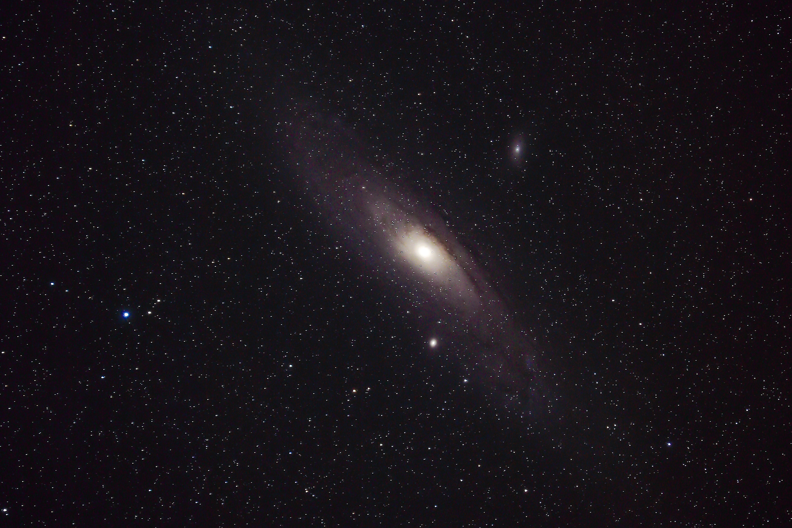

Explorando a Galáxia de Andrômeda
A Galáxia de Andrômeda é uma das galáxias mais próximas da Via Láctea e uma das maiores galáxias espirais conhecidas. Ela está localizada a aproximadamente 2,537 milhões de anos-luz da Terra e é um alvo fascinante para astrônomos e entusiastas do espaço.
Telescópio Espacial James Webb
O Telescópio Espacial James Webb (JWST) é o sucessor do Telescópio Espacial Hubble e é projetado para estudar o universo em comprimentos de onda infravermelhos. Ele permitirá a observação de objetos celestes distantes e ajudará os cientistas a entender melhor a formação de estrelas, planetas e galáxias.